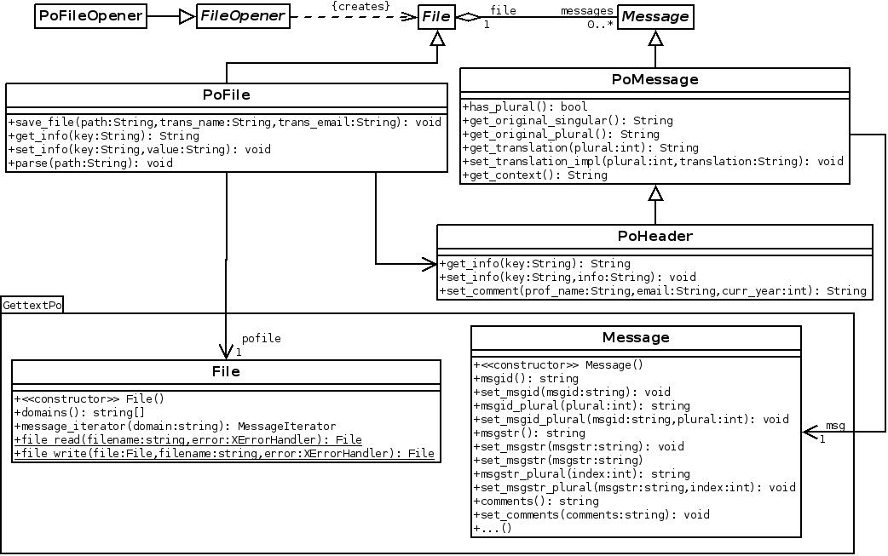

GNOMECAT,
un editor de ficheiros
GNU GetText
para o proxecto

Autor:
Director:
Índice
- 1. Introdución
- 2. Metodoloxía
- 3. Planificación
- 4. Desenvolvemento
- 5. Demo
- 6. Conclusións
- 7. Traballo Futuro
Introdución: GNU GetText
Solución para internacionalización e localización
Amplamente empregada para aplicativos de escritorio
Moi completa
Adaptar Código Fonte
demo.cint main () {
[...]
setlocale (LC_ALL, "");
bindtextdomain ("demo", "/usr/local/share/locale");
textdomain ("demo");
//Translators: This is a comment.
printf (gettext("Enter your details.\n"));
printf (gettext("Name:"));
scanf ("%s", name);
printf (gettext("Number of children:"));
scanf ("%i", &number);
printf (ngettext ("Hi %s, you have one child.\n",
"Hi %s, you have %i children.\n", number),
name, number);
}
Extraer as cadeas (xgettext)
demo.pot#. Comment from developers.
#: demo.c:18
#, c-format
msgid ""
"Enter your details.\n"
msgstr ""
#: demo.c:22
#, c-format
msgid "Hi %s, you have one child.\n"
msgid_plural "Hi %s, you have %i children.\n"
msgstr[0] ""
msgstr[1] ""
Inicializar ficheiro PO (msginit)
es_ES.po#. Comment from developers.
#: demo.c:18
#, c-format
msgid ""
"Enter your details.\n"
msgstr ""
#: demo.c:22
#, c-format
msgid "Hi %s, you have one child.\n"
msgid_plural "Hi %s, you have %i children.\n"
msgstr[0] ""
msgstr[1] ""
Traducir
es_ES.po#. Comment from developers.
# Comentario de los traductores.
#: demo.c:18
#, fuzzy, c-format
msgid ""
"Enter your details.\n"
msgstr ""
"Introduzca sus datos.\n"
#: demo.c:22
#, c-format
msgid "Hi %s, you have one child.\n"
msgid_plural "Hi %s, you have %i children.\n"
msgstr[0] "Hola %s, tiene un hijo.\n"
msgstr[1] "Hola %s, tiene %i hijos.\n"
Traducir
Os Ficheiros PO son texto plano
Podense editar con:
- Editor de textos: vim, gedit, kate...
Ferramenta CAT: editor gráfico, axudas a tradución...
- GTranslator
- Virtaal
- ...
Xerar ficheiro MO
GTranslator
- Aplicación CAT oficial de GNOME.
- Sen maintainer.
- Con moitos bugs.
- Escrita en C con GObject.
GNOMECAT
- Nova ferramenta CAT para GNOME.
- Simple pero moi extensible.
- Escrita nunha linguaxe amigable: Vala.
Metodoloxía: eXtreme Programming
Código Aberto
Deseño Simple
Estandares de Programación
Cliente no Sitio
Planificación

GSoC 2013
5 Iteracións
325 horas
Cur. 2013/2014
2 Iteracións
85 horas
GSoC 2014
5 Iteracións
325 horas
Desenvolvemento
Análise
Listas de correos de equipos de traductores
Programas existentes
Análise: Funcionalidades Principais
Edición de ficheiros
Navegación e busca
Perfiles
Plugins
Módulo de Ficheiros
GettextPo • Deseño estensible • Consellos • Pistas
Módulo de Linguaxes
[...]
{
"expression" : "nplurals=2; plural=(n > 1);",
"number_of_plurals" : 2,
"tags" : [
{
"number" : 0,
"tag" : "Equal to 0 or 1"
},
{
"number" : 1,
"tag" : "Greater than 1"
}
]
},
[...]Instancias das linguaxes con información adicional
Plugins
LibPeas • Comprobadores • Provedores de Pistas
Interface de Usuario
Varias versións
Seguimos as Guías de Interfaces Humanas De GNOME
DEMO
Conclusións
Creación dun aplicativo simple pero extensible.
Experiencia no stack de GNOME e con bibliotecas en desenvolvemento.
GUADEC 2013 en Brno (Rep. Checa)
X GUADEC Hispana en Madrid
GUADEC 2014 en Strasbourg (Francia)

Traballo Futuro
Implicar a máis desenvolvedores no proxecto.
Implementación dunha memoria de tradución e integración con Damned Lies.